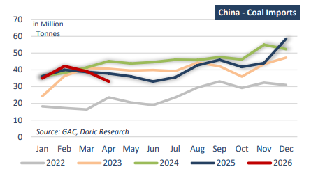

China’s commodity markets continue to send increasingly mixed signals to the dry bulk sector, as weakening steel production and deteriorating property activity coexist with resilient iron ore imports and renewed concerns surrounding domestic coal supply. Over recent months, the Chinese market has become progressively less driven by traditional demand fundamentals and increasingly influenced by inventory management, supply security considerations, and government intervention. This divergence has become visible following the latest coal mine accident in Shanxi province, which has once again highlighted the fragility of China’s domestic coal supply chain despite record production levels in recent years.
The latest steel data released during May confirmed that China’s domestic steel market remains under pressure. China’s crude steel production declined by 2.8 percent year-on-year in April to 86.63 million tonnes, marking the weakest April production level since 2018. During the first four months of the year, steel output fell by 4.1 percent year-on-year to 331.12 million tonnes. Steel exports, which had provided critical support to Chinese mills throughout the past two years amid weak domestic construction activity, also started to lose momentum, declining by 9.7 percent year-on-year during January-April to 34.2 million tonnes. The weakness in steel production remains closely linked to the prolonged downturn in China’s property sector, which continues to weigh heavily on construction-related steel demand. Housing activity remains subdued, developer financing conditions remain tight, and infrastructure investment alone has proven insufficient to fully offset the decline in residential construction. In particular, Investment in China’s real estate sector continued its protracted decline, falling 13.7 percent on year during April, worsening from the 11.2 percent contraction seen in the first quarter. New construction activity contracted 22.0 percent year-on year over January-April, deepening from a 20.3 percent decline in the first quarter.
However, despite weaker steel output, China’s iron ore imports continue to remain remarkably resilient. During the first four months of the year, iron ore imports increased by approximately 8 percent year-on-year to 418.6 million tonnes, according to customs data. April imports alone reached 103.9 million tonnes, remaining broadly stable compared to previous months despite slowing steel production. On a monthly basis, import volumes registered as light decline of 0.85 percent from March’s 104.74 million tonnes. However, the daily arrival rate actually ticked up to 3.46 million tonnes. Arrivals from Brazil stole the spotlight in April, with a massive 23.3 percent annual surge to 25.26 million tonnes, while Australian imports rose by 9.5 percent on year to 61.8 million tonnes. In reference to the domestic production, China’s raw iron ore output reached 82.84 million tonnes, down 3.5 percent year-on-year but up 4.0 percent month-on-month, supported by improved spring weather and temporary mill restocking, highlighting rising reliance on imports. From January-April, domestic output totalled 326.78 million tonnes, marking a 1.0 percent year-on-year contraction compared with the same period in 2025. At the same time, Chinese port inventories continue to operate near historically elevated levels. According to Mysteel’s latest survey, imported iron ore inventories at China’s major ports stood at 171.16 million tonnes as of May 28.
Under normal market conditions, such elevated inventory levels combined with falling steel output would likely trigger a significant correction in iron ore imports. Nevertheless, imports have remained firm, suggesting that Chinese buying patterns are increasingly being shaped by factors extending beyond immediate steel demand. Firstly, lower iron ore prices during the first quarter encouraged aggressive purchasing activity by both mills and traders. Singapore iron ore futures spent much of recent months fluctuating within a relatively narrow range around $100-105 per tonne, encouraging inventory accumulation. Secondly, strong shipments from Australia and Brazil, combined with the absence of major weather disruptions, allowed Chinese buyers to absorb surplus cargoes. More importantly, structural factors are increasingly supporting long-term import demand. China’s domestic iron ore production continues to deteriorate both in volume and quality terms. Domestic ore grades remain substantially lower than imported material, generally containing only 20-30 percent iron content compared to imported grades of 60-65 percent from Australia and Brazil. As domestic ore quality weakens further, Chinese mills are becoming increasingly dependent on imported high-grade material.
At the same time, China’s coal market has entered a renewed period of uncertainty following the deadly explosion at the Liushenyu coal mine in Shanxi province. The accident, which killed 82 workers, marked China’s deadliest mining disaster in more than a decade and immediately triggered widespread safety inspections across several mining regions. Authorities temporarily suspended production at numerous mines, particularly in Shanxi, China’s largest coalproducing province. According to Reuters, by May 25 production equivalent to approximately 319,000 tonnes per day had been suspended across 109 mines in Shanxi alone, representing roughly 10 percent of provincial output. Additional suspensions in other regions lifted total disrupted capacity to approximately 16.85 million tonnes. The immediate market reaction was significant. The most actively traded coking coal contract on the Dalian Commodity Exchange surged nearly 10 percent following the accident. This disruption comes against a backdrop of already weakening seaborne coal imports. After a record-breaking first quarter, China’s coal imports fell 12.5 percent year-on-year in April to 33.1 million tonnes, the lowest monthly level since June 2025. Cumulative imports for the first four months reached 149.4 million tonnes, down 2.1 percent year-on-year. The decline reflected weaker seaborne prices earlier in the year, strong domestic output, and softer external supply. Notably, Mongolia’s shipments surged 61.0 percent to 11.33 million tonnes, narrowly surpassing Indonesia at 11.12 million tonnes to become China’s largest monthly supplier. The timing is particularly sensitive ahead of the summer power demand season. China has maintained record domestic coal production of around 4.83 billion tonnes last year as part of its energy security strategy, yet the latest disruptions highlight how quickly safety-driven shutdowns can tighten supply. Analysts estimate Shanxi’s coking coal output could fall 10 percent to 15 percent in the near term, with nationwide supply down 7 percent to 10 percent, increasing the risk of renewed seaborne coal imports into the peak summer period.

Ultimately, China’s commodity demand profile is undergoing a gradual structural shift that is blurring traditional cyclical relationships. The link between steel production, property activity, and raw material imports is becoming increasingly distorted by inventory cycles, energy security priorities, and state-driven supply management. As a result, headline import volumes may remain relatively supported even in periods of weakening underlying demand, while volatility increasingly shifts to supply-side disruptions and policy responses rather than pure consumption cycles. For dry bulk markets, this implies a more stable but less predictable demand environment, where resilience in volumes coexists with a growing disconnect from fundamental economic strength.
Data source:Doric